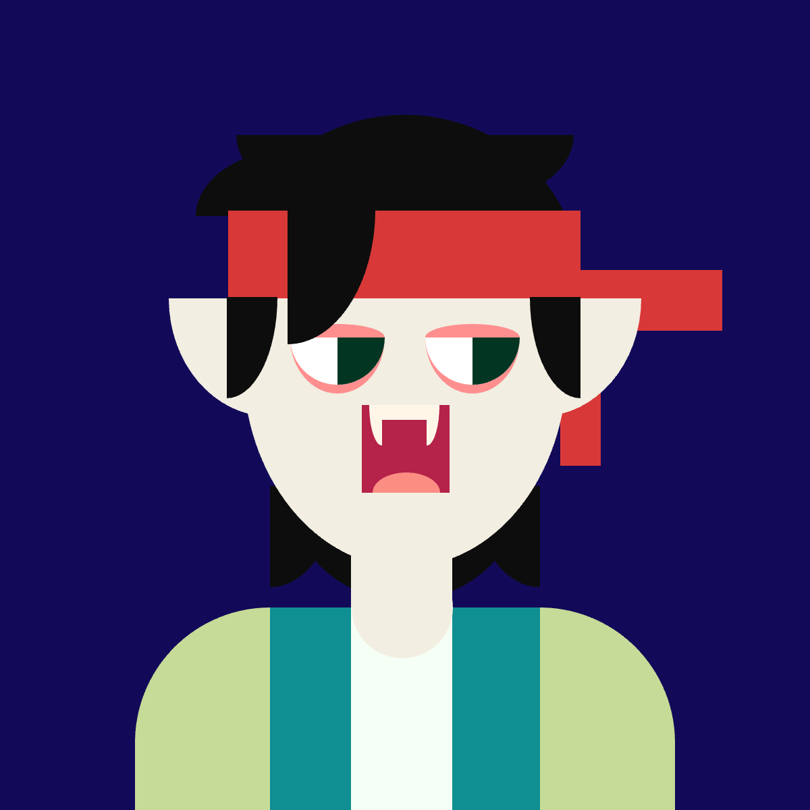

Self Portrait
For this self portrait I decided to revisit the time I had short hair in order to get the opportunity to work with p5.js more than if I were to make my self portrait have longer hair. In here, I also look more vampiric here due to something known as a creative liberty.
